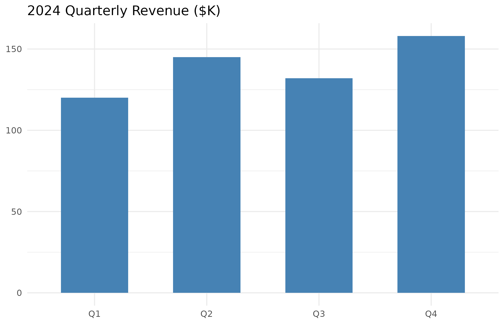
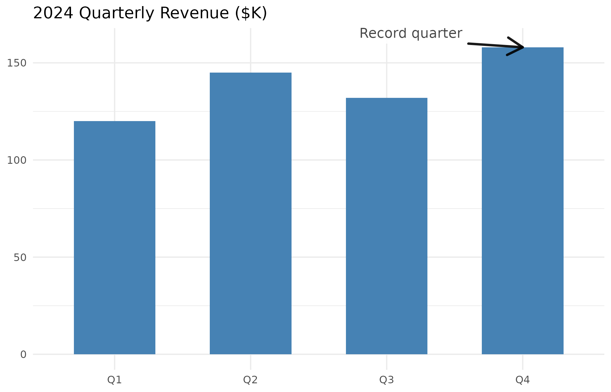
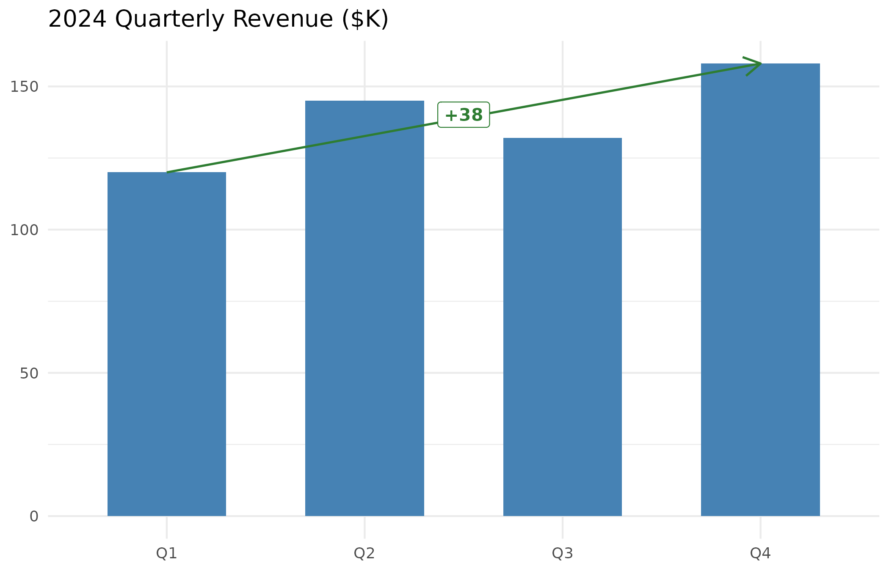
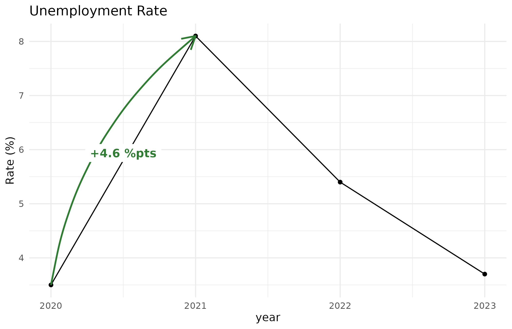
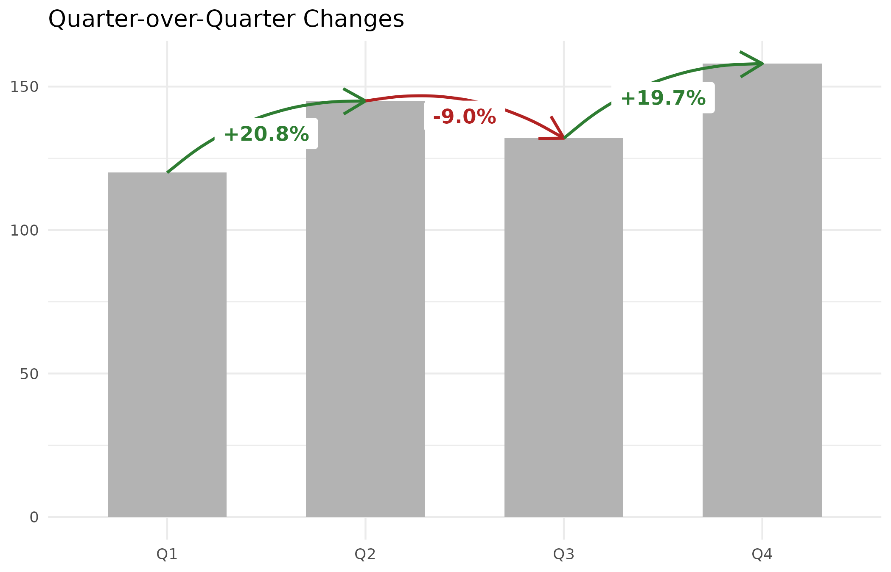
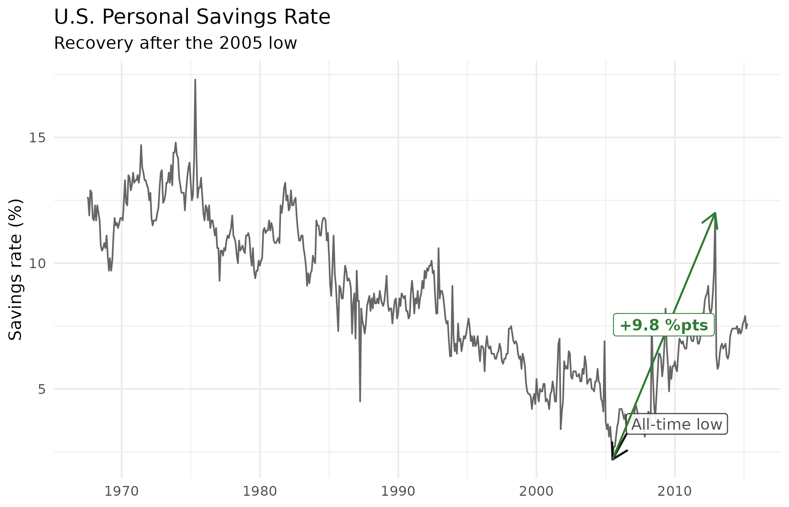
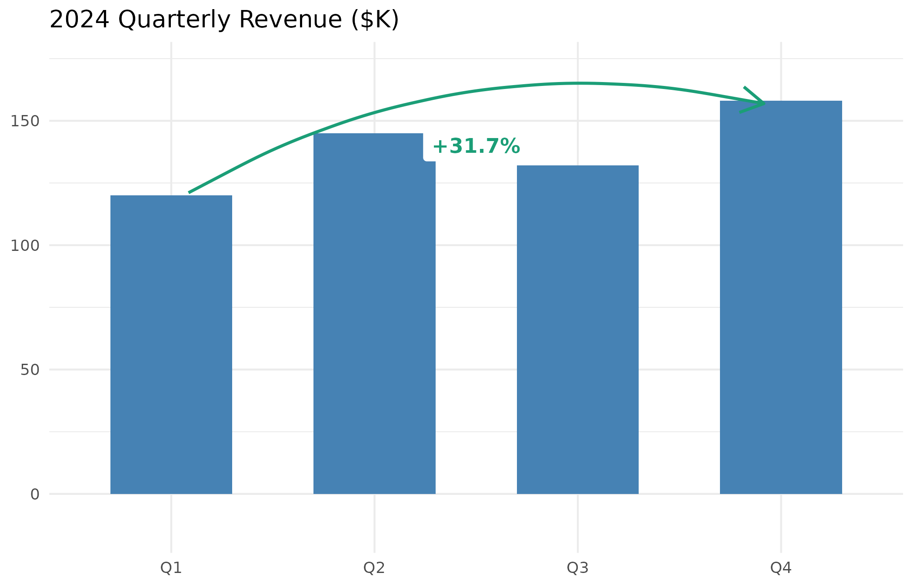
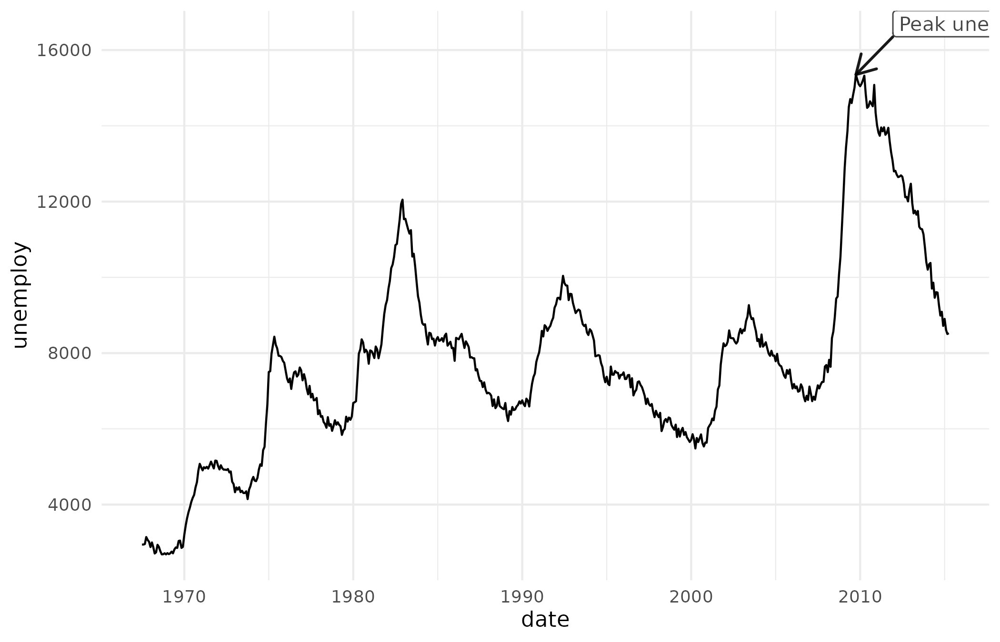

Narrating Business Charts with ggmemo
Source:vignettes/narrating-business-charts.Rmd
narrating-business-charts.RmdA ggplot2 chart shows data. An annotated chart tells a story — it directs the reader’s attention to the data points that matter and quantifies what changed. ggmemo adds that storytelling layer with two functions:
-
annotate_callout()points at a data row with an arrow and label. -
annotate_change()draws a color-coded arrow between two rows and labels the delta.
Both return standard ggplot2 layers that you add to a plot with
+.
This vignette walks through a quarterly revenue dataset from a bare chart to a fully narrated one.
A chart without annotations
This bar chart is accurate, but it doesn’t guide the reader. Which quarter matters? Is the trend good or bad? The viewer has to figure that out on their own.
p <- ggplot(revenue, aes(x = quarter, y = revenue)) +
geom_col(fill = "steelblue", width = 0.6) +
labs(title = "2024 Quarterly Revenue ($K)", x = NULL, y = NULL) +
theme_minimal()
p
Calling out a key data point
annotate_callout() points at a specific row in your data
with an arrow and label. You identify the row with a filter expression —
the same syntax you use in dplyr::filter():
p +
annotate_callout(
revenue,
where = quarter == "Q4",
label = "Record quarter",
position = "top-left"
)
#> Registered S3 methods overwritten by 'ggpp':
#> method from
#> heightDetails.titleGrob ggplot2
#> widthDetails.titleGrob ggplot2
The position argument controls where the label sits
relative to the data point. Options are "top-right" (the
default), "top-left", "bottom-right", and
"bottom-left".
Showing the change between two points
annotate_change() draws a color-coded arrow between two
rows and labels the midpoint with the computed delta — green for
increases, red for decreases:
p +
annotate_change(
revenue,
from = quarter == "Q1",
to = quarter == "Q4",
value = revenue
)Format options
The format argument controls how the delta is displayed.
The default is "percent". Other options:
Absolute difference — shows the raw numeric change:
p +
annotate_change(
revenue,
from = quarter == "Q1",
to = quarter == "Q4",
value = revenue,
format = "absolute"
)
Percentage points — useful when the data is already
expressed as a rate or percentage (e.g., savings rate, market share).
Using "percent" on rate data gives a misleading
percent-of-percent; "points" gives the straightforward
difference:
rates <- data.frame(
year = 2020:2023,
rate = c(3.5, 8.1, 5.4, 3.7)
)
ggplot(rates, aes(x = year, y = rate)) +
geom_line() +
geom_point() +
annotate_change(
rates,
from = year == 2020,
to = year == 2021,
value = rate,
format = "points"
) +
labs(title = "Unemployment Rate", y = "Rate (%)") +
theme_minimal()
Putting it all together
You can combine both functions on one chart. The callout names a moment; the change annotation quantifies what happened:
ggplot(revenue, aes(x = quarter, y = revenue)) +
geom_col(fill = "steelblue", width = 0.6) +
annotate_callout(
revenue,
where = quarter == "Q4",
label = "Record quarter",
position = "top-left"
) +
annotate_change(
revenue,
from = quarter == "Q1",
to = quarter == "Q4",
value = revenue
) +
labs(title = "2024 Quarterly Revenue ($K)", x = NULL, y = NULL) +
theme_minimal()Multiple change annotations
You can stack several annotate_change() calls to show
quarter-over-quarter movement across the full series:
ggplot(revenue, aes(x = quarter, y = revenue)) +
geom_col(fill = "grey70", width = 0.6) +
annotate_change(revenue, from = quarter == "Q1",
to = quarter == "Q2", value = revenue) +
annotate_change(revenue, from = quarter == "Q2",
to = quarter == "Q3", value = revenue) +
annotate_change(revenue, from = quarter == "Q3",
to = quarter == "Q4", value = revenue) +
labs(title = "Quarter-over-Quarter Changes", x = NULL, y = NULL) +
theme_minimal()
Time series
ggmemo works with Date x-axes. Here’s a savings rate time series with
a callout at the all-time low and a change annotation showing the
recovery. Note the use of nudge to manually position the
callout label — this overrides the automatic heuristic, which can miss
on wide data frames with many numeric columns (see Nudge below):
ggplot(economics, aes(x = date, y = psavert)) +
geom_line(colour = "grey40") +
annotate_callout(
economics,
where = date == as.Date("2005-07-01"),
label = "All-time low",
nudge = c(365, 1)
) +
annotate_change(
economics,
from = date == as.Date("2005-07-01"),
to = date == as.Date("2012-12-01"),
value = psavert,
format = "points"
) +
labs(
title = "U.S. Personal Savings Rate",
subtitle = "Recovery after the 2005 low",
x = NULL, y = "Savings rate (%)"
) +
theme_minimal()
Customization
Colors
annotate_change() uses dark green for increases, dark
red for decreases, and grey for no change by default. You can supply
your own palette with the colors argument — a named vector
with entries up, down, and
flat:
p +
annotate_change(
revenue,
from = quarter == "Q1",
to = quarter == "Q4",
value = revenue,
colors = c(up = "#1B9E77", down = "#D95F02", flat = "#7570B3")
)
Label styling
Both functions accept ..., which passes additional
arguments through to the underlying ggplot2 layer. Use this to override
defaults like text size, background fill, or text colour:
p +
annotate_callout(
revenue,
where = quarter == "Q4",
label = "Record quarter",
position = "top-left",
size = 5,
fill = "lightyellow",
colour = "grey30"
)Nudge
annotate_callout() automatically computes how far to
offset the label from the data point based on the data ranges. This
works well for simple two-column data frames. For wider data frames with
many numeric columns (like ggplot2::economics), the
heuristic may pick the wrong column’s range and produce a label that’s
too far away or too close.
You can override the heuristic by passing
nudge = c(x, y) in data units:
ggplot(economics, aes(x = date, y = unemploy)) +
geom_line() +
annotate_callout(
economics,
where = date == as.Date("2009-10-01"),
label = "Peak unemployment",
nudge = c(800, 1000)
) +
theme_minimal()
Alternatively, you can pass a two-column subset of the data so the heuristic has less to guess:
annotate_callout(
economics[, c("date", "unemploy")],
where = date == as.Date("2009-10-01"),
label = "Peak unemployment"
)Common mistakes
These are the most common issues that come up when getting started with ggmemo.
Character columns need factor()
If your x-axis column is a character vector (common after
read.csv()), annotate_change() will error and
suggest converting it. When you do, always specify levels
to preserve the order in your data — plain factor() sorts
alphabetically:
Date-like strings need as.Date()
CSV files store dates as strings. If your date column looks like
"2024-01-15" but is class character, convert
it before plotting:
data$date <- as.Date(data$date)ggmemo will detect date-like strings and suggest this in the error message.
Use colour, not color
ggplot2 uses British spelling internally. American color
works in most contexts, but it can produce a “Duplicated aesthetics”
warning when the function already sets a default colour.
Using colour avoids the warning:
annotate_callout(..., colour = "red")
size controls text, not the label box
The size argument sets text size (in mm, matching
ggplot2 conventions). To adjust the padding around the text inside the
label box, use label.padding:
annotate_callout(..., size = 5, label.padding = unit(0.4, "lines"))What ggmemo doesn’t do
ggmemo is focused on two tasks: callout annotations and change annotations for business charts. For other annotation needs, these packages are worth knowing:
- Label overlap avoidance: ggrepel automatically repositions text labels to avoid overlaps.
- Precise NPC positioning: ggpp supports normalized parent coordinates and is the package ggmemo builds on.
- Interactive annotations: plotly and ggiraph support hover tooltips, click events, and zoom.
- Themes and styling: ggthemes, hrbrthemes, and bbplot provide polished chart themes for business and publication contexts.